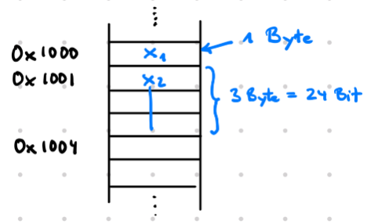
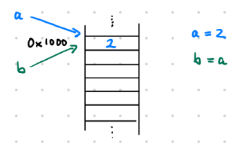
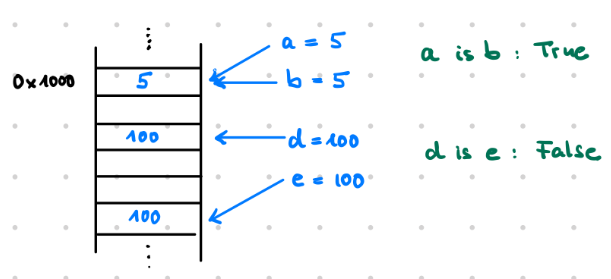

Speicheradressen (memory address)#
Den Computerspeicher stellen wir uns vor als eine riesige Sammlung von Bits (0 und 1). 8 Bits werden zu einem Byte zusammengefasst und jedes Byte im Speicher hat eine Adresse. Über die Adressen können wir an bestimmte Stellen des Speichers springen. Adressen sind selbst Zahlen, die üblicherweise hexadezimal angegeben werden. In einem 32-Bit Betriebssystem darf eine Zahl, die eine Speicheradresse sein soll, höchstens 32 Bit lang sein.
In einem 32-Bit Betriebssystem gibt es \(2^{32}\) Adressen, von 0 bis \(2^{32}-1\) (0x00000000 - 0xFFFFFFFF).
2**32-1
4294967295
int('FFFFFFFF',16)
4294967295
# Hier wird Kilo mit 1024 benutzt, wie in diesem Zusammenhang üblich
bdict = {1:'KiloByte', 2:'MegaByte', 3:'GigaByte', 4:'TeraByte', 5:'PetaByte', 6:'ExaByte'}
x = 2**32
for k in bdict:
if x/(1024**k) < 1: break
print(f'{x} Byte = {x//(1024**k)} {bdict[k]}')
4294967296 Byte = 4194304 KiloByte
4294967296 Byte = 4096 MegaByte
4294967296 Byte = 4 GigaByte
Ein 32-Bit Betriebssystem kann einen Speicherbereich bis 4 GB Speicher verwalten. Diese Begrenzung war einer der Hauptgründe für die Einführung von 64-Bit Betriebssystemen.
x = 2**64
for k in bdict:
if x/(1024**k) < 1: break
print(f'{x} Byte = {x//(1024**k)} {bdict[k]}')
18446744073709551616 Byte = 18014398509481984 KiloByte
18446744073709551616 Byte = 17592186044416 MegaByte
18446744073709551616 Byte = 17179869184 GigaByte
18446744073709551616 Byte = 16777216 TeraByte
18446744073709551616 Byte = 16384 PetaByte
18446744073709551616 Byte = 16 ExaByte
Ein 64-Bit Betriebssystem kann einen Speicherbereich bis 16 ExaByte Speicher verwalten.
Darstellung des Speichers#
Im folgenden stellen wir uns den Speicher wie in der Abbildung als eine lange Kette von Bytes vor. Jedes Byte hat eine Adresse. In den Bytes können wir die binäre Darstellung von Objekten speichern. In der Abbildung benötigt Objekt \(x_1\) nur 1 Byte. Das Objekt \(x_2\) beginnt bei Speicheradresse 0x1001 und benötigt 3 Byte. Der nächste freie Speicherplatz ist also 0x1004.

Bei der Zuweisung a = 2erzeugt der Python Memory Manager in einem freien Speicherbereich ein Objekt mit dem Inhalt 2 und a ist ein Name für die Adresse, an der dieses Objekt im Speicher beginnt. Genau genommen ist a also nicht identisch mit der 2, sondern mit der Startadresse, an der die 2 gespeichert wurden. Man sagt dazu auch: a ist ein Zeiger auf die 2. Alle Variablen in Python sind Zeiger auf Speicheradressen. Die Adresse, auf die eine Variable zeigt, kann man sich mit der Funktion id() ausgeben lassen.
In den meisten Fälle sagen wir weiterhin: In der Variablen a speichern wir die 2, auch wenn damit eigentlich gemeint ist: Die Adresse, an der die 2 im Speicher steht, nennen wir a.

a = 2
hex(id(a))
'0x7ffca507f348'
Die Anweisung b = a bewirkt, dass b auf dieselbe Adresse zeigt, auf die a zeigt. Die Gleichheit der Adressen können wir mit is bzw. is not überprüfen.
b = a
hex(id(b))
'0x7ffca507f348'
a is b
True
Interning#
Interning verwendet Python als eine Maßnahme zur Speicheroptimierung. Dabei werden Objekte, die schon existieren, wiederverwendet. Dazu gehören alle Zahlen von -5 bis 256 und Strings, die so aussehen, als könnten sie Variablennamen sein.

# Das Objekt 5 wird nur einmal erzeugt.
a = 5
b = 5
print(hex(id(a)))
print(hex(id(b)))
0x7ffca507f3a8
0x7ffca507f3a8
print(a is b)
print(a == b)
True
True
# Das Objekt 500 wird zweimal erzeugt.
a = 500
b = 500
print(hex(id(a)))
print(hex(id(b)))
0x2375457b950
0x2375457b470
print(a is b)
print(a == b)
True
True
# Das Objekt 'Hallo' wird nur einmal erzeugt
a = 'Hallo'
b = 'Hallo'
print(hex(id(a)))
print(hex(id(b)))
0x23754042030
0x23754042030
print(a is b)
print(a == b)
True
True
# Das Objekt 'Hallo Welt' wird zweimal erzeugt
a = 'Hallo Welt'
b = 'Hallo Welt'
print(hex(id(a)))
print(hex(id(b)))
0x237545f48f0
0x23753ca3530
print(a is b)
print(a == b)
True
True
Das Interning ist eine Implementationsentscheidung der jeweiligen Python-Version (CPython). Deshalb sollte der is-Operator nicht zum Abfragen der Gleichheit von Objekten benutzt werden, sondern der == - Operator. Ausnahme: Das Objekt None.
None#
Auch None ist ein Objekt. Es hat einen eigenen Typ.
type(None)
NoneType
Das Objekt None ist ein Singleton. Es gibt nur ein Objekt von Typ NoneType. Ein zweites lässt sich nicht erzeugen. Alle Variablen, die auf None gesetzt werden, zeigen auf die gleiche Speicheradresse. Deswegen kann die Abfrage auf None mit dem is-Operator bzw. is not-Operator durchgeführt werden.
a = None
b = None
print(hex(id(a)))
print(hex(id(b)))
0x7ffca4f17cc8
0x7ffca4f17cc8
a is None
True
d = 5
d is not None
True